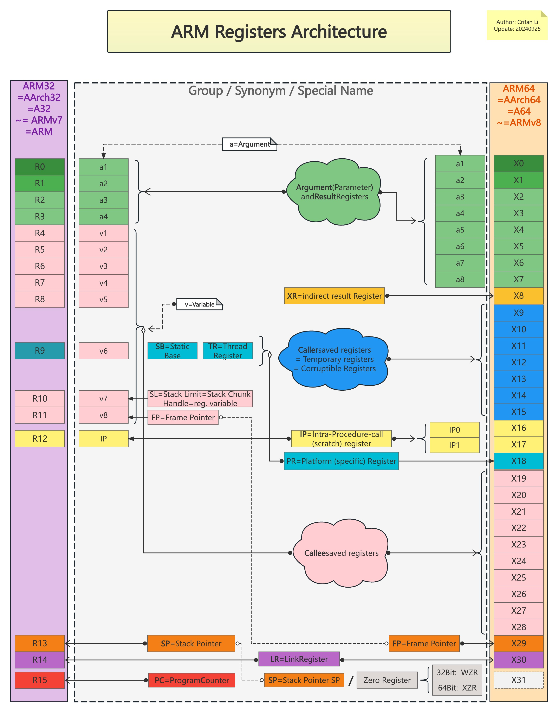
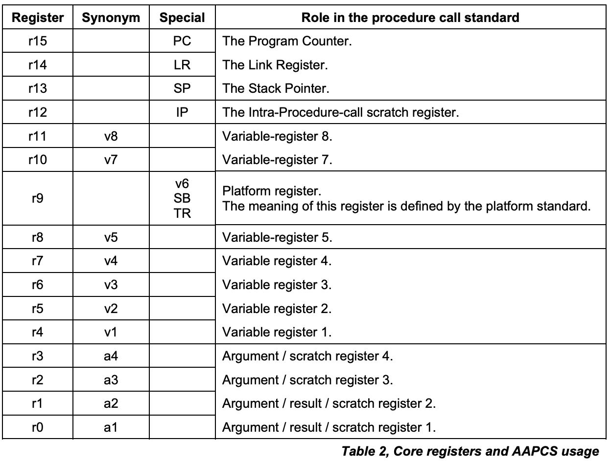
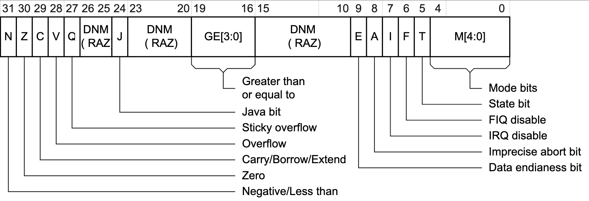
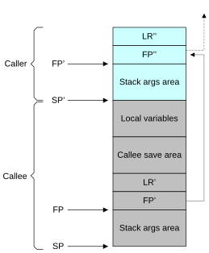
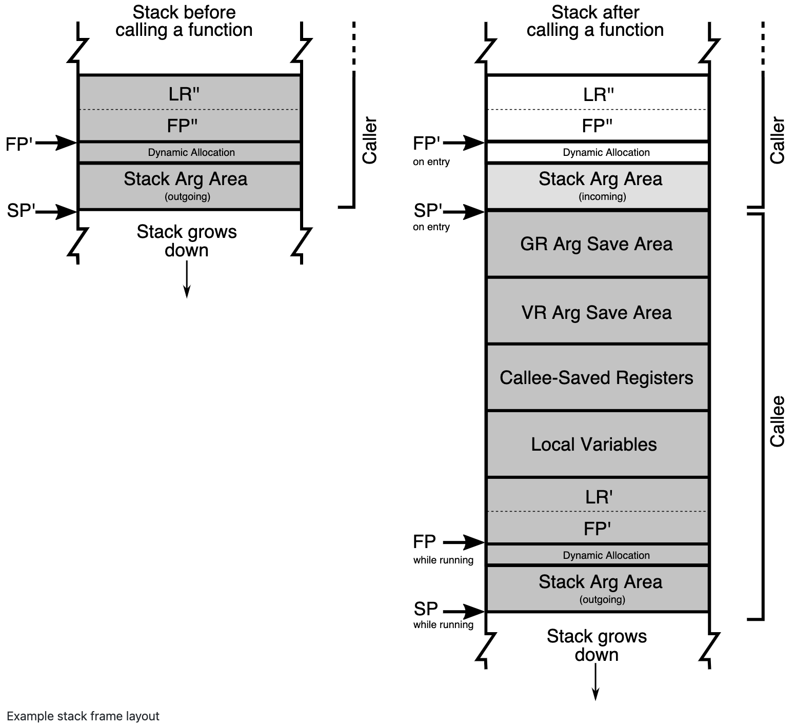
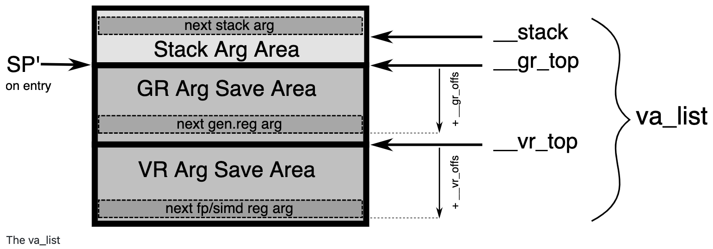
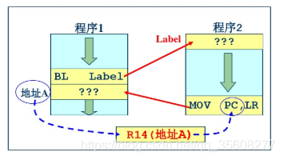

ARM概述
- 【整理】ARM汇编指令和架构
- 【整理】ARM架构：栈Stack
- ARMv8-A has a 64-bit architecture called AArch64
- ARM
- 指令集
- ARM本身有不同的：指令集
- ARM32：AArch32 = 32位 的 ARM的A32 和 Thumb的T32
- ARM64：AArch64 = 64位 的 A64指令集
- 指令集会使用到寄存器，而寄存器的使用，要符合：
调用规范
- ARM本身有不同的：指令集
- 调用规范
- 包括
- ARM32：AAPCS
- ARM64：AAPCS64
- 含义
- PCS=Procedure Call Standard
- specifies
- Which registers are used to pass arguments into the function.
- Which registers are used to return a value to the function doing the calling, known as the caller.
- Which registers the function being called, which is known as the callee, can corrupt.
- Which registers the callee cannot corrupt.
- specifies
- PCS=Procedure Call Standard
- 概述
- 自己整理的：
- 本地查看

- 在线浏览
- 本地查看
- AAPCS

- AAPCS64 ~= AArch64
- 自己整理的：
- 详解
- 特殊的寄存器，有专门的名称
PC=Program Counter=程序计数器- 用途：记录当前CPU的地址，总是指向正在“取指”的指令
- 流水线（一般）使用三个阶段，因此指令分为三个阶段执行
- 1、取指：从存储器装载一条指令
- 2、译码：识别将要被执行的指令
- 3、执行：处理 指令并将结果写回寄存器
- 流水线（一般）使用三个阶段，因此指令分为三个阶段执行
- 对应寄存器
- ARM32：
R15 - ARM64：
X31
- ARM32：
- 用途：记录当前CPU的地址，总是指向正在“取指”的指令
LR=Link Register=链接寄存器- 用途：用于函数调用function calls
- 对应寄存器
- ARM32：
R14 - ARM64：
X30
- ARM32：
SP=Stack Pointer=栈指针- ARM32：
R13
- ARM32：
FP=Frame Pointer=帧指针- ARM32：R11 ？
- ARM64：
X29
IP==Intra-Procedure=Intra-Procedure-call (scratch) register- ARM32：
- R12
- ARM64
- IP0 (X16) = first intra-procedure-call scratch register
- IP1 (X17) = second intra-procedure-call temporary register
- ARM32：
- PR=Platform (specific) Register=平台相关寄存器
- ARM32：R9
- v6 = an additional callee-saved variable register
- A virtual platform that has no need for such a special register may designate r9 as an additional callee-saved variable register, v6
- SB=Static Base：in a position-independent data model
- TR=Thread Register：in an environment with thread-local storage
- v6 = an additional callee-saved variable register
- ARM64：X18
- ARM32：R9
- XR=indirect result Register=间接结果寄存器
- 用途：保存函数调用返回的（结构体等非普通的数值的）结果（的指针地址）
- 对比：x0、x1等保存函数返回的普通的数值类型的结果，即单个寄存器能保存的值
- 对应寄存器
- ARM32：无？
- ARM64：X8
- 用途：保存函数调用返回的（结构体等非普通的数值的）结果（的指针地址）
- 其他寄存器也有专门的大的分类
- Parameter and Result Registers
- 用途：作为参数和结果
- 传递函数参数：调用其他（子）函数时，用x0、x1、x2等作为参数
- 保存函数结果：函数调用返回后，结果保存在x0等寄存器中
- 对应寄存器
- ARM32：R0-R3
- ARM64：X0-X7
- 特殊
- 一般保存返回结果，只用x0
- 极个别情况下，才用到：x1，返回第二个函数结果
- 一般保存返回结果，只用x0
- 用途：作为参数和结果
- Caller和Callee
- Caller-saved registers=调用者负责保存的寄存器=temporary registers=临时寄存器=Corruptible Registers=容易被破坏的寄存器
- 用途：
- 函数调用方 再调用 被调用函数之前 负责保存X9-X15
- 调用子函数之前，如果这些寄存器中有保存值，记得要保存起来，即保存上下文
- 函数调用后，再恢复这些寄存器，就恢复了现场
- 汇编代码就可以继续运行了
- 对应寄存器
- ARM32：好像就没有这个说法？
- ARM64：X9-X15
- 用途：
- Callee-saved Registers=被调用者负责保存的寄存器
- 用途
- 被调用函数，在被调用后，刚要执行之前，负责保存X19-X29
- 对应寄存器
- ARM32：R4-R11
- 除了R9特殊是PR=Platform (specific) Register
- ARM64：X19-X28
- ARM32：R4-R11
- 用途
- Caller-saved registers=调用者负责保存的寄存器=temporary registers=临时寄存器=Corruptible Registers=容易被破坏的寄存器
- Parameter and Result Registers
- 其他说明
- 寄存器保存值的类型
- 写成W，比如W0,、W1等：用于保存integer整数
- 写成D，比如D0、D1等：用于保存double双精度浮点数
- 寄存器保存值的类型
- 特殊的寄存器，有专门的名称
- 包括
- 其他相关
- 除了上述介绍的普通寄存器之外，还有特殊寄存器
- 状态寄存器
CPSR=Current Program Status Register- 旧称：
APSR=Application Program Status Register - CPSR的bit位含义

- 旧称：
SPSR=Saved Program Status Register- 注：部分模式时才可用
- 状态寄存器
- 寄存器的叫法=概念
- Global register
- A register whose value is neither saved nor destroyed by a subroutine. The value may be updated, but only in a manner defined by the execution environment.
- Scratch register / temporary register
- A register used to hold an intermediate value during a calculation (usually, such values are not named in the program source and have a limited lifetime).
- Variable register / v-register
- A register used to hold the value of a variable, usually one local to a routine, and often named in the source code.
- Global register
- ARM指令是三级流水线，取指，译指，执行时同时执行的
- 现在PC指向的是正在取指的地址
- 假设在ARM状态 下，一个指令占4个字节
- 那么
- cpu正在译指的指令地址是PC-4
- cpu正在执行的指令地址是PC-8
- 下一个指令的值就是：PC+4
- 那么
- 假设在ARM状态 下，一个指令占4个字节
- -》也就是说PC所指向的地址和现在所执行的指令地址相差8
- 当突然发生中断的时候，保存的是PC的地址
- 如果返回的时候返回PC，那么中间就有一个指令没有执行，所以用
- SUB pc lr-irq #4
- 现在PC指向的是正在取指的地址
- 函数调用 相关
- caller和callee

- Example stack frame layout

- The va_list

- LR寄存器 用法 图示

- caller和callee
- 相关名字概念
- prologue vs epilogue
- prologue code = start of routine = 开场代码
- 被调用函数的最开始一段代码要做的事情
- epilogue code = 结尾代码
- 被调用函数的最后一段代码要做的事情
- prologue code = start of routine = 开场代码
- caller-safe register vs callee-safe register
- caller-safe register
- caller负责保存的寄存器
- 比如当r12用作scratch register时，calle被调用函数内，有可能会使用r12，改变r12的值，则此时caller函数调用者就要在调用calle之前，自己保存好r12的值
- -》Scratch register 也叫做caller-safe register
- 比如当r12用作scratch register时，calle被调用函数内，有可能会使用r12，改变r12的值，则此时caller函数调用者就要在调用calle之前，自己保存好r12的值
- caller负责保存的寄存器
- callee-safe register
- calle负责保存的寄存器
- caller-safe register
- prologue vs epilogue
- 除了上述介绍的普通寄存器之外，还有特殊寄存器
- 指令集